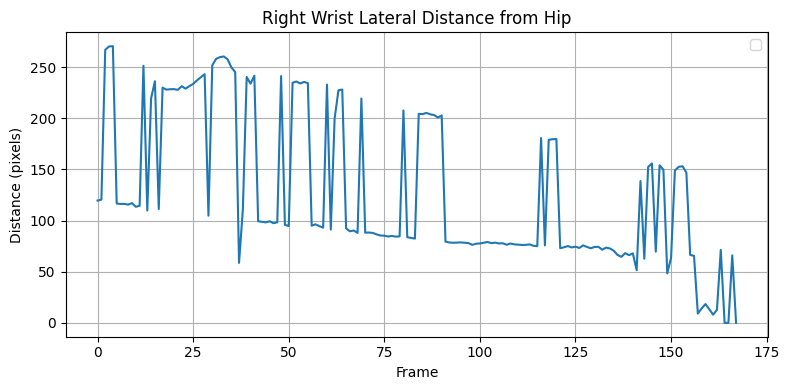
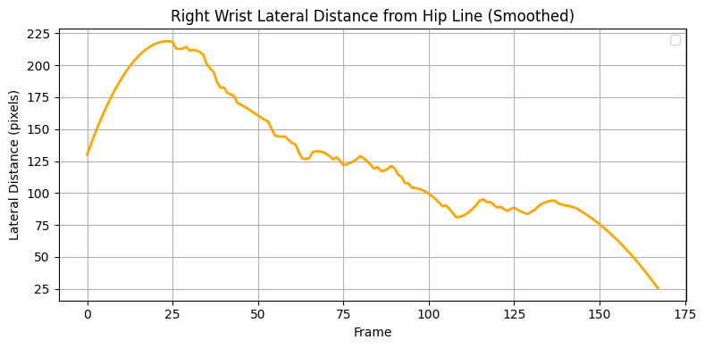

Automated detection of cyclist hand signals can enhance the experience and safety of road users.
For instance, it is standard for self-driving cars to detect car turn signals, but cyclists may be overlooked.
Another possible application is vision-based traffic light detection. Overlooking cyclist turn signals may result in missed optimizations in traffic flow.
Let's explore the viability of detecting hand signals from cyclists using a super lightweight model.
Method
I used YOLOv8-Pose with ByteTrack to track cyclists across frames.
Pose data was overlaid using OpenCV. Position data noise reduction was performed using Savitzky-Golay filtering.
Full code and data available on GitHub.
Results
Figure 1. A cyclist turning. Frame-by-frame pose annotations applied.
Because each frame is independent, the pose jumps from the cyclist to other humans. To mitigate this issue, let's track each human across frames.
Figure 2. Tracking across frames applied to each human.
Now, we can apply pose estimation to only the turning cyclist.
Figure 3. Pose estimation only applied to turning cyclist through tracking.
Looks much better! The pose is stable. Now, let's begin feature extraction to distinguish between signaling and nonsignaling.
Cyclists typically signal by extending their arm to the side. We can plot displacement of the hand in the direction perpendicular to the sagittal plane, which I
will refer to as the lateral distance.

Figure 4. Lateral distance of right wrist to hip.
It's quite noisy because YOLOv8-Pose is a super lightweight model. Let's extract the trend using a Savitzky-Golay filter.

Figure 5. Lateral distance of right wrist to hip with Savitzky-Golay filter smoothing.
The noise is greatly reduced while the overall shape is preserved. Let's plot this simultaneously with the video and see if it aligns well.
Figure 6. Lateral distance matched up with the video.
The peak in the graph aligns well with when the cyclist is signaling. Let's test the model on a different cyclists.
Figure 7. Another turning cyclist with lateral distance matched up with the video.
This peak is also aligned with the signaling. This method can capture hand signals in distance graphs. What if the cyclist is not signaling while turning? Will it be flat?
Figure 8. A turning cyclist who is not using a hand signal.
This cyclist is riding very steadily and not signaling. There is little fluctuation in lateral distance.
This suggests that lateral distance is a good indicator of hand signaling in cyclists.
Discussion
Vision-based hand signaling detection in cyclists is feasible even with an extremely lightweight model like YOLOv8-Pose.
Accuracy could be drastically improved with a more complex model. My goal in this experiment was to demonstrate basic feasibility.
Self-driving vehicles and traffic light detection systems should consider adding this feature to their systems.
Full code and data available on GitHub.